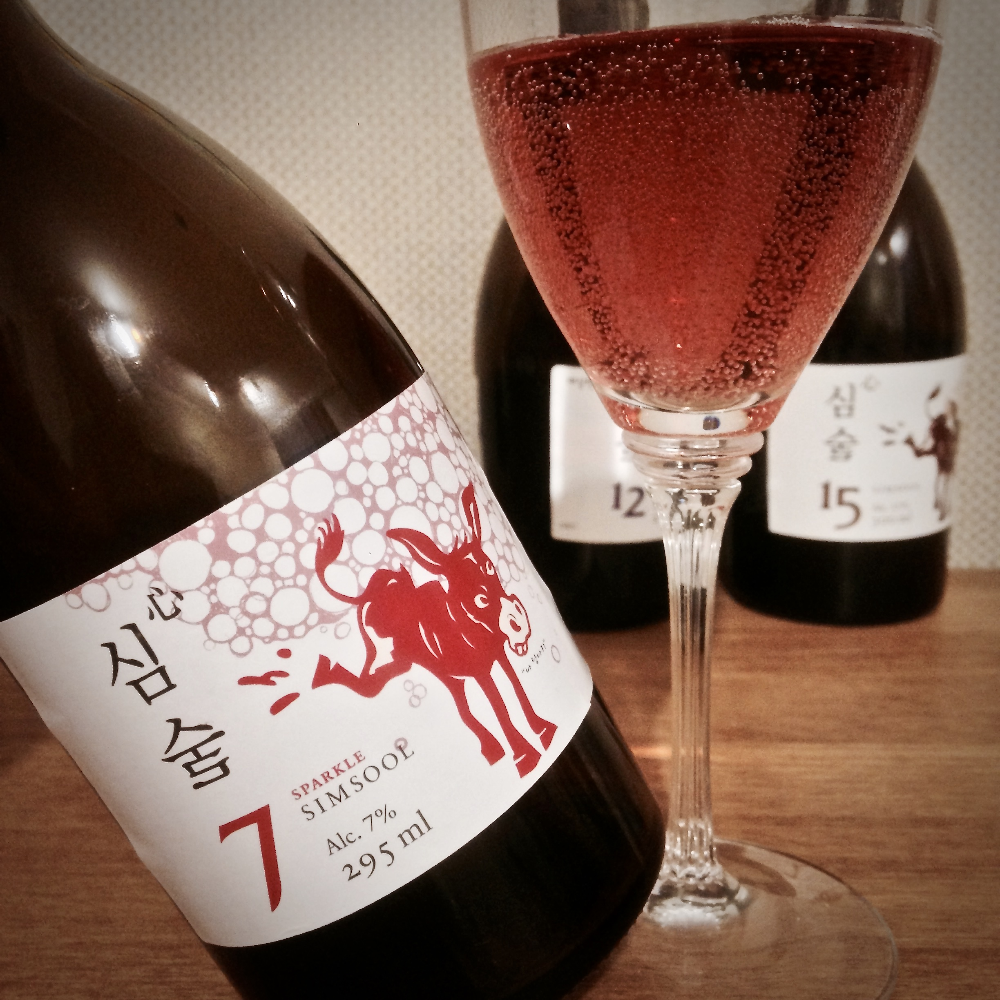
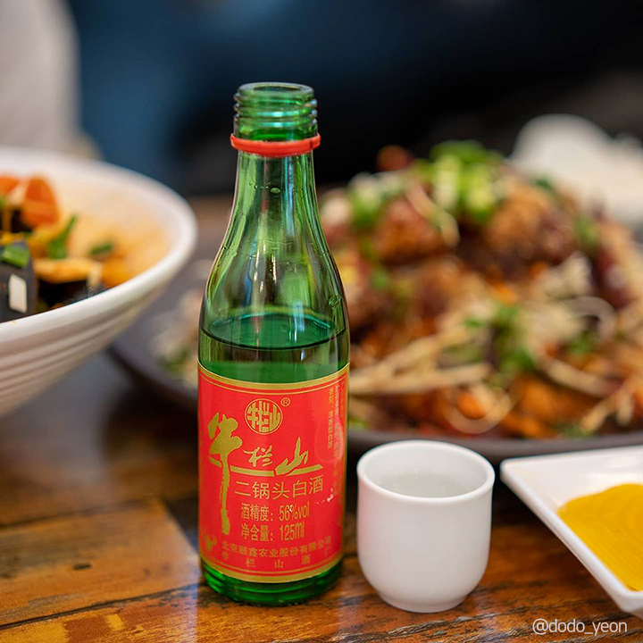

매화수는 매화로 만들어져 달달하며 살짝 시큼한 향이 난다. 도수가 낮아 주량이 낮고 음주를 가볍게 즐기고자 하는 사람들에게 적합하다.
매화수는 매화로 만들어져 달달하며 살짝 시큼한 향이 난다. 도수가 낮아 주량이 낮고 음주를 가볍게 즐기고자 하는 사람들에게 적합하다.

심술은 목넘긺이 무거운 편이며 달달한 맛이 강하다. 소주보다 가벼운 느낌의 술은 아니지만 도수는 낮고 한국식 와인을 마시는 듯한 느낌을 준다.

고량주는 도수가 높은 술에 속하며 중국 술 특유의 향이 강한 느낌을 준다. 양주와 마찬가지로 소량으로 마시게 되는데 목넘긺이 무겁지는 않지만 코를 쏘는 강한 향을 가지고 있다.
양주는 고량주와 같이 높은 도수의 술이지만, 고량주와는 다르게 목넒김이 무겁고 식도를 통해 내려가면서 목이 뜨거워지는 느낌을 받을 수 있다. 반면 향은 크게 강하지 않아 마셨을 때 각 양주들의 특징에 따라 특유의 향이 살짝 올라온다.